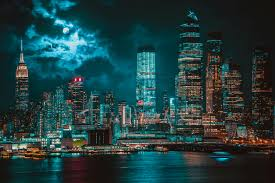
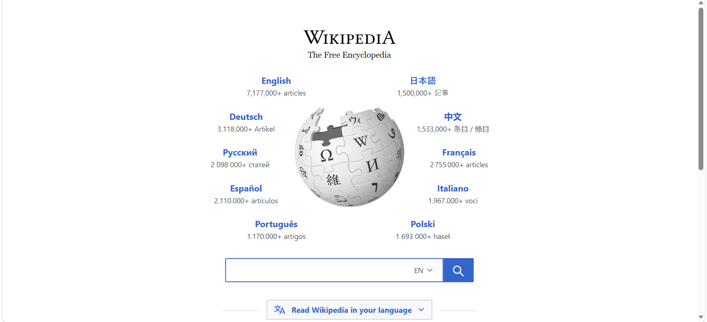
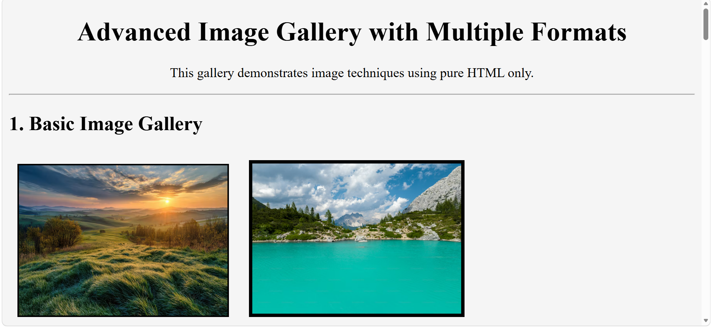
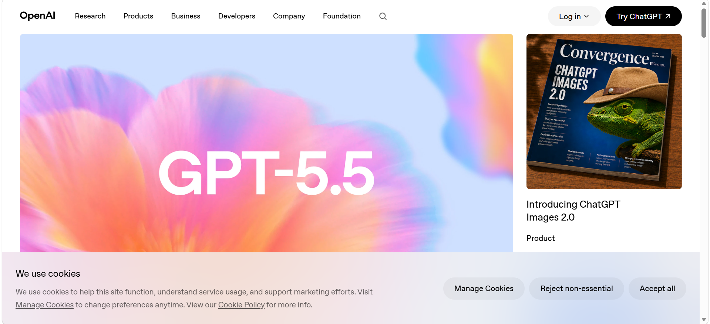
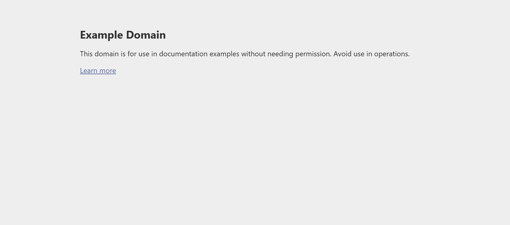

This gallery demonstrates image techniques using pure HTML only.









This paragraph demonstrates how text wraps around an image aligned to the left side of the page. The align attribute allows the image to float beside the content. HTML image attributes such as hspace and vspace create spacing around the image. This layout style was commonly used in older HTML-based websites.

This example shows an image aligned to the right side of the page. The surrounding text automatically wraps around the image position. The image includes descriptive alternative text for accessibility and uses traditional HTML attributes for spacing and formatting.